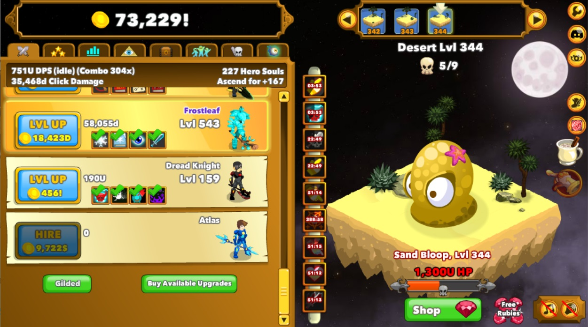

One hobby that I have is playing games. While games are really
pleasing, they tend to be looked down on because usually, people
spend a lot of time on them, but gaming has its benefits, for
example, games have been known to help with multi-tasking, and
improve our mental flexibility. Some games are meant to be
educational and there are games that aren't so helpful in that area.
Why I like my hobby
I enjoy playing games because they relax me and will distract me a
little when times get tough. Many games expand my ways of thinking
or give me new ideas. Some games I will play just to listen to music
and not think about what I am doing when playing. Growing up with
games has always made them feel nostalgic, so I don't plan to stop
playing games anytime soon.
Game: No Man's Sky

Game: Clicker Heroes
My issue with my hobby
The biggest issue with my hobby is that it can be a huge
time-waster, and as I grow older I notice how much time I spend
playing games rather than using it for productivity. Having new
ideas and alternate ways of thinking is wasted, if they are not
implemented and not being used. Overall though I still play games
and enjoy them, but I have started trying to limit myself to prevent
playing excessively.
Current favorite game
Genshin impact is a game I have been playing recently and is
currently my go-to game. The game has really soothing music and
there is a lot of depth even though the game is still in
development. You can spend a good amount of time on the game in the
beginning, but I noticed that when I play it I can limit myself more
and how long I play. The game gives out daily commissions and daily
resin. I usually spend half my game time on these daily tasks. I
spend about an hour each day playing this game, but it's the only
game I play. I'm not entirely sure if I just want to learn more
about my future objectives nowadays or if timing myself with free
time helped me get a little more productive.
Game: Genshin Impact
Interested in playing games yourself? Here are some sites to get
started: